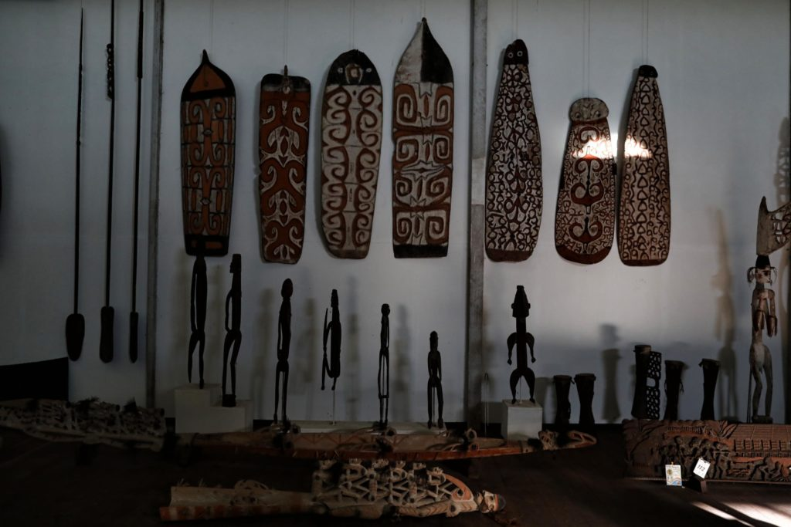

Perbedaan Rumah Gadang
Perbedaan Rumah Gadang: Gonjong Limo → punya 5 gonjong, bentuk sederhana, biasanya untuk keluarga kecil.
Maharam → lebih besar dan megah, jumlah gonjong banyak, dipakai keluarga besar dan pusat adat.
Serambi Papek → memiliki serambi depan tertutup, fungsinya untuk aktivitas keluarga dan tamu.
Batingkek → rumah gadang bertingkat, langka, umumnya milik bangsawan.
Baju batabue
Asal: Pakaian adat khas Minangkabau, Sumatra Barat.
Berhias benang emas dengan sulaman indah di kain songket.
Benang emas melambangkan kemuliaan, kehormatan, dan kebahagiaan bagi mempelai.
Ayam pop
Ayam Pop adalah masakan khas Minangkabau dari Sumatra Barat yang diolah dengan cara direbus menggunakan bumbu rempah lalu digoreng sebentar, disajikan dengan sambal tomat pedas.
Senjata Kerambit
Kerambit adalah senjata tradisional Minangkabau berbentuk pisau kecil melengkung menyerupai cakar harimau, digunakan untuk pertahanan diri dan melambangkan keberanian.
Alat musik kecapi
Kecapi Sumbar adalah alat musik tradisional Minangkabau dari Sumatra Barat yang dimainkan dengan cara dipetik, biasanya untuk mengiringi dendang atau pantun, serta menjadi bagian penting dalam kesenian tradisi Minang.

alat musik serunai
Serunai adalah alat musik tiup tradisional Minangkabau dari Sumatra Barat yang terbuat dari bambu atau kayu, menghasilkan suara nyaring, biasanya dimainkan pada upacara adat, kesenian randai, dan pertunjukan tradisional.